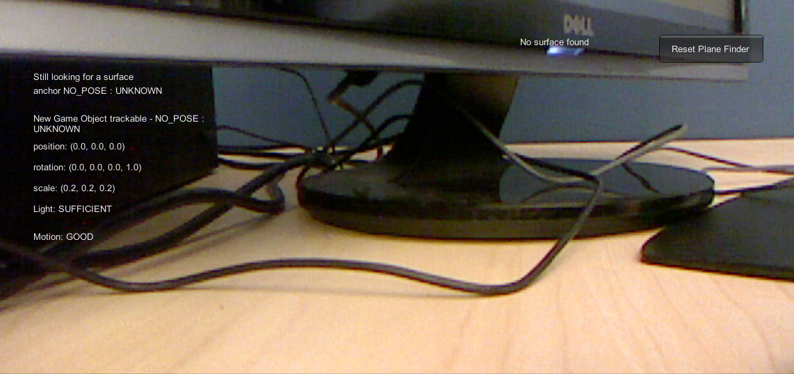
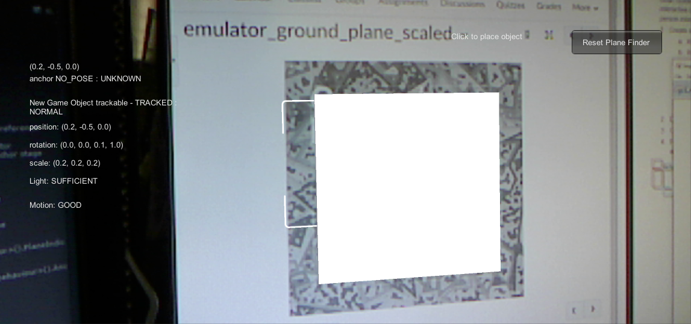
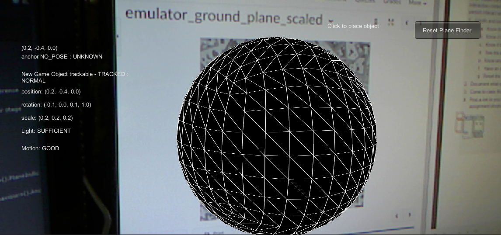

Exercise for my class in Current Topics in Interactive Development. In this AR Interactive piece we used the Ground Target image to create an informative User Interaface for displaying the AR elements. The UI is still fairly primative but relays the necessary information, such as sufficient light, movement, and instructions to click when the target image is found.


